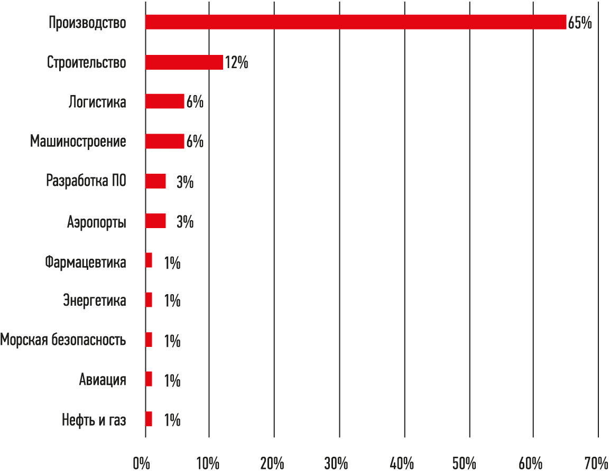

Обеспечение кибербезопасности АСУ ТП
Кибербезопасность АСУ ТП – относительно недавно определяющаяся в самостоятельное направление безопасности область. В силу специфики, для АСУ ТП (автоматизированная система управления технологичеким процессом) неприменим классический термин «информационная безопасность», поэтому мы используем прямой перевод распространенного в сфере информационных технологий англоязычного термина «cybersecurity».
КиберугрозыКиберугрозы — явление не новое, но за последнее десятилетие значимость связанных с ними рисков многократно возросла. Дело в том, что раньше автоматизированные системы управления технологическими процессами (АСУ ТП) были физически отделены от локальных вычислительных сетей и Интернета. В современном мире требования к АСУ ТП изменились: они больше не могут оставаться изолированными от внешнего мира. Также важно отметить возрастающую роль решений автоматизации в рамках концепции промышленного «Интернета вещей» (Industrial Internet of Things, IIoT). Эта тенденция заставляет абсолютно по-новому взглянуть на проблему обеспечения кибернетической безопасности в промышленной среде.
Сегодня руководству компаний важно в режиме онлайн контролировать множество показателей технологических процессов, управлять эффективностью производства и обеспечивать коллективную работу через сети, в том числе для территориально удаленных сотрудников. В процессе освоения «Интернета вещей» к промышленным сетям в той или иной мере должны получить доступ третьи компании, к примеру, поставщики оборудования — с целью контроля над его состоянием. Все эти новые возможности АСУ существенно упрощают многие процессы и радикально сказываются на рентабельности, однако при этом создают новые риски для операционной деятельности, связанные с киберугрозами.
Мотивы кибератак многообразны: это получение финансовой выгоды, желание нанести ущерб конкурентам, оказать политическое давление. Порой атаки совершаются по личным мотивам недовольными сотрудниками или подрядчиками. Вне зависимости от причин ущерб от несанкционированного вторжения в АСУ ТП оказывается очень весомым. Это не только внеплановые остановки производства и поломки оборудования, но и серьезные репутационные потери, утечка конфиденциальной информации, угроза жизни и здоровью людей, рост риска аварий и даже техногенных катастроф.
Количество кибератак на промышленные сети неуклонно растет. Так, по данным ICS-CERT (United States Computer Emergency Readiness Team — Американская группа реагирования на чрезвычайные ситуации в киберпространстве), с 2006 по 2012 г. количество киберинцидентов увеличилось на 782%. В 2014 г. было зарегистрировано 245 случаев кибератак на промышленных объектах, а в 2015 г. — уже 295. При этом очевидно, что многие атаки остались вне поля зрения аналитиков. По данным международной консалтинговой корпорации PwC, средний ущерб от инцидента в сфере информационной безопасности в России в 2015 г. составил $5,3 млн, что на 47% выше, чем годом ранее.
Безусловно, все большее распространение киберугроз заставляет собственников промышленных активов искать надежные способы защитить свои сети, а поставщиков решений в сфере АСУ ТП — продумывать комплексные программы минимизации рисков в сфере кибербезопасности.
В отраслях с критически важной инфраструктурой (к примеру, в энергетике, нефтегазовой и атомной промышленности) производства уже сегодня готовы инвестировать средства в повышение защищенности своих активов. Однако в других отраслях многие пользователи либо не знают о риске кибератак, либо не спешат внедрять на своих предприятиях решения, необходимые для обеспечения безопасности. Ухудшает ситуацию то, что окупаемость инвестиций в кибербезопасность трудно посчитать. В результате многие производственные компании сегодня заняли выжидательную позицию, изменить которую сможет только появление обязательных регулирующих норм или прецедент кибератаки.
